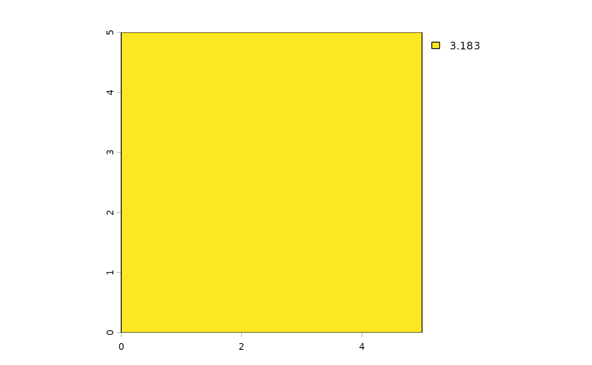

vignettes/Intro-to-Cache.Rmd
Intro-to-Cache.RmdAs part of a reproducible workflow, caching of function calls, code
chunks, and other elements of a project is a critical component. The
objective of a reproducible workflow is is likely that an entire work
flow from raw data to publication, decision support, report writing,
presentation building etc., could be built and be reproducible anywhere,
on any computer, operating system, with any starting conditions, on
demand. The reproducible::Cache function is built to work
with any R function.
Cache users DBI as a backend, with key
functions, dbReadTable, dbRemoveTable,
dbSendQuery, dbSendStatement,
dbCreateTable and dbAppendTable. These can all
be accessed via Cache, showCache,
clearCache, and keepCache. It is optimized for
speed of transactions, using digest::digest on objects and
files. The main function is superficially similar to
archivist::cache, which uses digest::digest in
all cases to determine whether the arguments are identical in subsequent
iterations. It also but does many things that make standard
caching with digest::digest don’t work reliably between
systems. For these, the function .robustDigest is
introduced to make caching transferable between systems. This is
relevant for file paths, environments, parallel clusters, functions
(which are contained within an environment), and many others (e.g., see
?.robustDigest for methods). Cache also adds
important elements like automated tagging and the option to retrieve
disk-cached values via stashed objects in memory using
memoise::memoise. This means that running
Cache 1, 2, and 3 times on the same function will get
progressively faster. This can be extremely useful for web apps built
with, say shiny.
Any function can be cached by wrapping Cache around the
function call, or by using base pipe |>:
This will be a slight change to a function call, such as:
terra::project(raster, crs = terra::crs(newRaster)) to
Cache(terra::project(raster, crs = terra::crs(newRaster)))
or with the pipe, which may be more convenient as it is easy to add and
remove caching in the code base:
terra::project(raster, crs = terra::crs(newRaster)) |> Cache()
This is particularly useful for expensive operations.
##
## Attaching package: 'data.table'## The following object is masked from 'package:terra':
##
## shift## The following object is masked from 'package:base':
##
## %notin%
tmpDir <- file.path(tempfile(), "reproducible_examples", "Cache")
dir.create(tmpDir, recursive = TRUE)
# Source raster with a complete LCC definition
ras <- terra::rast(terra::ext(0, 300, 0, 300), vals = 1:9e4, res = 1)
terra::crs(ras) <- "+proj=lcc +lat_1=60 +lat_2=70 +lat_0=50 +lon_0=-100 +x_0=0 +y_0=0 +datum=WGS84 +units=m +no_defs"
# Target CRS in PROJ form (no EPSG lookup)
newCRS <- "+proj=longlat +datum=WGS84 +no_defs"
# Derive target extent from source extent (no registry lookup)
target_ext <- terra::project(terra::ext(ras), from = terra::crs(ras), to = newCRS)
# Build template with chosen resolution; assign CRS
tmplate <- terra::rast(target_ext, resolution = 0.00001)
terra::crs(tmplate) <- newCRS
# No Cache
system.time(map1 <- terra::project(ras, tmplate, method = "near"))## user system elapsed
## 0.029 0.003 0.032
# Try with memoise for this example -- for many simple cases, memoising will not be faster
opts <- options("reproducible.useMemoise" = TRUE)
# With Cache -- a little slower the first time because saving to disk
system.time({
suppressWarnings({
map1 <- terra::project(ras, tmplate, method = "near") |>
Cache(cachePath = tmpDir)
})
})## Saved! Cache file: b080b61ea3444bd7.rds; fn: project (and added a memoised copy)## user system elapsed
## 0.486 0.013 0.500
# faster the second time; improvement depends on size of object and time to run function
system.time({
map2 <- terra::project(ras, tmplate, method = "near") |>
Cache(cachePath = tmpDir)
})## Object to retrieve (fn: project, b080b61ea3444bd7.rds) ...## Loaded! Memoised result from previous project call## user system elapsed
## 0.042 0.000 0.043## [1] "Attributes: < Component \".Cache\": Component \"newCache\": 1 element mismatch >"
try(clearCache(tmpDir, ask = FALSE), silent = TRUE) # just to make sure it is clear
ranNumsA <- rnorm(10, 16) |> Cache(cachePath = tmpDir)## Saved! Cache file: aa549dd751b2f26d.rds; fn: rnorm## Object to retrieve (fn: rnorm, aa549dd751b2f26d.rds) ...## Loaded! Cached result from previous rnorm call## No cachePath supplied. Using /tmp/RtmpGTspgP/reproducible/cache## Saved! Cache file: aa549dd751b2f26d.rds; fn: rnorm## Saved! Cache file: 518c3b4edbec74ec.rds; fn: Cache## No cachePath supplied and getOption('reproducible.cachePath') is inside a temporary directory;
## this will not persist across R sessions.## Object to retrieve (fn: rnorm, aa549dd751b2f26d.rds) ...## Loaded! Cached result from previous rnorm call## Saved! Cache file: e9df4d337d371e6a.rds; fn: Cache## Object to retrieve (fn: rnorm, aa549dd751b2f26d.rds) ...## Loaded! Cached result from previous rnorm call
# Any minor change makes it different
ranNumsE <- rnorm(10, 6) |> Cache(cachePath = tmpDir) # different## Saved! Cache file: d78b46a2a76d6d80.rds; fn: rnorm## Saved! Cache file: adf21923cd1e50d0.rds; fn: rnorm## Saved! Cache file: e23cab430872a0ea.rds; fn: runif## Cache size:## Total (including Rasters): 40 bytes## Selected objects (not including Rasters): 40 bytes## cacheId tagKey tagValue
## <char> <char> <char>
## 1: adf21923cd1e50d0 function rnorm
## 2: adf21923cd1e50d0 objectName a
## 3: adf21923cd1e50d0 accessed 2026-08-25 19:34:54.34703
## 4: adf21923cd1e50d0 inCloud FALSE
## 5: adf21923cd1e50d0 elapsedTimeDigest 0.001936197 secs
## 6: adf21923cd1e50d0 preDigest .FUN:4f604aa46882b368
## 7: adf21923cd1e50d0 preDigest mean:c40c00762a0dac94
## 8: adf21923cd1e50d0 preDigest n:7eef4eae85fd9229
## 9: adf21923cd1e50d0 preDigest sd:853b1797f54b229c
## 10: adf21923cd1e50d0 class numeric
## 11: adf21923cd1e50d0 object.size 80
## 12: adf21923cd1e50d0 fromDisk FALSE
## 13: adf21923cd1e50d0 resultHash
## 14: adf21923cd1e50d0 elapsedTimeFirstRun 0.001196146 secs
## 15: e23cab430872a0ea function runif
## 16: e23cab430872a0ea objectName b
## 17: e23cab430872a0ea accessed 2026-08-25 19:34:54.35420
## 18: e23cab430872a0ea inCloud FALSE
## 19: e23cab430872a0ea elapsedTimeDigest 0.001717091 secs
## 20: e23cab430872a0ea preDigest .FUN:881ec847b7161f3c
## 21: e23cab430872a0ea preDigest max:853b1797f54b229c
## 22: e23cab430872a0ea preDigest min:c40c00762a0dac94
## 23: e23cab430872a0ea preDigest n:7eef4eae85fd9229
## 24: e23cab430872a0ea class numeric
## 25: e23cab430872a0ea object.size 80
## 26: e23cab430872a0ea fromDisk FALSE
## 27: e23cab430872a0ea resultHash
## 28: e23cab430872a0ea elapsedTimeFirstRun 0.001035213 secs
## cacheId tagKey tagValue
## <char> <char> <char>
## createdDate
## <char>
## 1: 2026-08-25 19:34:54.349438
## 2: 2026-08-25 19:34:54.349438
## 3: 2026-08-25 19:34:54.349438
## 4: 2026-08-25 19:34:54.349438
## 5: 2026-08-25 19:34:54.349438
## 6: 2026-08-25 19:34:54.349438
## 7: 2026-08-25 19:34:54.349438
## 8: 2026-08-25 19:34:54.349438
## 9: 2026-08-25 19:34:54.349438
## 10: 2026-08-25 19:34:54.349438
## 11: 2026-08-25 19:34:54.349438
## 12: 2026-08-25 19:34:54.349438
## 13: 2026-08-25 19:34:54.349438
## 14: 2026-08-25 19:34:54.349438
## 15: 2026-08-25 19:34:54.356305
## 16: 2026-08-25 19:34:54.356305
## 17: 2026-08-25 19:34:54.356305
## 18: 2026-08-25 19:34:54.356305
## 19: 2026-08-25 19:34:54.356305
## 20: 2026-08-25 19:34:54.356305
## 21: 2026-08-25 19:34:54.356305
## 22: 2026-08-25 19:34:54.356305
## 23: 2026-08-25 19:34:54.356305
## 24: 2026-08-25 19:34:54.356305
## 25: 2026-08-25 19:34:54.356305
## 26: 2026-08-25 19:34:54.356305
## 27: 2026-08-25 19:34:54.356305
## 28: 2026-08-25 19:34:54.356305
## createdDate
## <char>## Cache size:## Total (including Rasters): 20 bytes## Selected objects (not including Rasters): 20 bytes## cacheId tagKey tagValue
## <char> <char> <char>
## 1: adf21923cd1e50d0 function rnorm
## 2: adf21923cd1e50d0 objectName a
## 3: adf21923cd1e50d0 accessed 2026-08-25 19:34:54.34703
## 4: adf21923cd1e50d0 inCloud FALSE
## 5: adf21923cd1e50d0 elapsedTimeDigest 0.001936197 secs
## 6: adf21923cd1e50d0 preDigest .FUN:4f604aa46882b368
## 7: adf21923cd1e50d0 preDigest mean:c40c00762a0dac94
## 8: adf21923cd1e50d0 preDigest n:7eef4eae85fd9229
## 9: adf21923cd1e50d0 preDigest sd:853b1797f54b229c
## 10: adf21923cd1e50d0 class numeric
## 11: adf21923cd1e50d0 object.size 80
## 12: adf21923cd1e50d0 fromDisk FALSE
## 13: adf21923cd1e50d0 resultHash
## 14: adf21923cd1e50d0 elapsedTimeFirstRun 0.001196146 secs
## createdDate
## <char>
## 1: 2026-08-25 19:34:54.349438
## 2: 2026-08-25 19:34:54.349438
## 3: 2026-08-25 19:34:54.349438
## 4: 2026-08-25 19:34:54.349438
## 5: 2026-08-25 19:34:54.349438
## 6: 2026-08-25 19:34:54.349438
## 7: 2026-08-25 19:34:54.349438
## 8: 2026-08-25 19:34:54.349438
## 9: 2026-08-25 19:34:54.349438
## 10: 2026-08-25 19:34:54.349438
## 11: 2026-08-25 19:34:54.349438
## 12: 2026-08-25 19:34:54.349438
## 13: 2026-08-25 19:34:54.349438
## 14: 2026-08-25 19:34:54.349438## Cache size:## Total (including Rasters): 20 bytes## Selected objects (not including Rasters): 20 bytes## cacheId tagKey tagValue
## <char> <char> <char>
## 1: e23cab430872a0ea function runif
## 2: e23cab430872a0ea objectName b
## 3: e23cab430872a0ea accessed 2026-08-25 19:34:54.35420
## 4: e23cab430872a0ea inCloud FALSE
## 5: e23cab430872a0ea elapsedTimeDigest 0.001717091 secs
## 6: e23cab430872a0ea preDigest .FUN:881ec847b7161f3c
## 7: e23cab430872a0ea preDigest max:853b1797f54b229c
## 8: e23cab430872a0ea preDigest min:c40c00762a0dac94
## 9: e23cab430872a0ea preDigest n:7eef4eae85fd9229
## 10: e23cab430872a0ea class numeric
## 11: e23cab430872a0ea object.size 80
## 12: e23cab430872a0ea fromDisk FALSE
## 13: e23cab430872a0ea resultHash
## 14: e23cab430872a0ea elapsedTimeFirstRun 0.001035213 secs
## createdDate
## <char>
## 1: 2026-08-25 19:34:54.356305
## 2: 2026-08-25 19:34:54.356305
## 3: 2026-08-25 19:34:54.356305
## 4: 2026-08-25 19:34:54.356305
## 5: 2026-08-25 19:34:54.356305
## 6: 2026-08-25 19:34:54.356305
## 7: 2026-08-25 19:34:54.356305
## 8: 2026-08-25 19:34:54.356305
## 9: 2026-08-25 19:34:54.356305
## 10: 2026-08-25 19:34:54.356305
## 11: 2026-08-25 19:34:54.356305
## 12: 2026-08-25 19:34:54.356305
## 13: 2026-08-25 19:34:54.356305
## 14: 2026-08-25 19:34:54.356305
clearCache(tmpDir, userTags = c("runif"), ask = FALSE) # remove only cached objects made during runif call## Cache size:## Total (including Rasters): 20 bytes## Selected objects (not including Rasters): 20 bytes
showCache(tmpDir) # all## Cache size:## Total (including Rasters): 482 bytes## Selected objects (not including Rasters): 482 bytes## cacheId tagKey tagValue
## <char> <char> <char>
## 1: 518c3b4edbec74ec function Cache
## 2: 518c3b4edbec74ec accessed 2026-08-25 19:34:54.24372
## 3: 518c3b4edbec74ec inCloud FALSE
## 4: 518c3b4edbec74ec elapsedTimeDigest 0.002820969 secs
## 5: 518c3b4edbec74ec preDigest .cacheChaining:71681d621365dfd7
## 6: 518c3b4edbec74ec preDigest .cacheExtra:c85d88fc56f4e042
## 7: 518c3b4edbec74ec preDigest .FUN:53b64a48c1458486
## 8: 518c3b4edbec74ec preDigest .functionName:c85d88fc56f4e042
## 9: 518c3b4edbec74ec preDigest conn:118387d5d48f757d
## 10: 518c3b4edbec74ec preDigest drv:9ce9a83896bf68a1
## 11: 518c3b4edbec74ec preDigest cacheSaveFormat:cf2828ea967d53e7
## 12: 518c3b4edbec74ec preDigest dryRun:e9aac936a0e8f6ae
## 13: 518c3b4edbec74ec preDigest FUN:265d86c3bd130de5
## 14: 518c3b4edbec74ec class call
## 15: 518c3b4edbec74ec object.size 1320
## 16: 518c3b4edbec74ec fromDisk FALSE
## 17: 518c3b4edbec74ec resultHash
## 18: 518c3b4edbec74ec elapsedTimeFirstRun 0.008474827 secs
## 19: aa549dd751b2f26d function rnorm
## 20: aa549dd751b2f26d accessed 2026-08-25 19:34:54.22874
## 21: aa549dd751b2f26d inCloud FALSE
## 22: aa549dd751b2f26d elapsedTimeDigest 0.001641273 secs
## 23: aa549dd751b2f26d preDigest .FUN:4f604aa46882b368
## 24: aa549dd751b2f26d preDigest mean:15620f138033a66c
## 25: aa549dd751b2f26d preDigest n:c5775c3b366fb719
## 26: aa549dd751b2f26d preDigest sd:853b1797f54b229c
## 27: aa549dd751b2f26d class numeric
## 28: aa549dd751b2f26d object.size 176
## 29: aa549dd751b2f26d fromDisk FALSE
## 30: aa549dd751b2f26d resultHash
## 31: aa549dd751b2f26d elapsedTimeFirstRun 0.001328468 secs
## 32: aa549dd751b2f26d accessed 2026-08-25 19:34:54.23806
## 33: aa549dd751b2f26d accessed 2026-08-25 19:34:54.27353
## 34: adf21923cd1e50d0 function rnorm
## 35: adf21923cd1e50d0 objectName a
## 36: adf21923cd1e50d0 accessed 2026-08-25 19:34:54.34703
## 37: adf21923cd1e50d0 inCloud FALSE
## 38: adf21923cd1e50d0 elapsedTimeDigest 0.001936197 secs
## 39: adf21923cd1e50d0 preDigest .FUN:4f604aa46882b368
## 40: adf21923cd1e50d0 preDigest mean:c40c00762a0dac94
## 41: adf21923cd1e50d0 preDigest n:7eef4eae85fd9229
## 42: adf21923cd1e50d0 preDigest sd:853b1797f54b229c
## 43: adf21923cd1e50d0 class numeric
## 44: adf21923cd1e50d0 object.size 80
## 45: adf21923cd1e50d0 fromDisk FALSE
## 46: adf21923cd1e50d0 resultHash
## 47: adf21923cd1e50d0 elapsedTimeFirstRun 0.001196146 secs
## 48: d78b46a2a76d6d80 function rnorm
## 49: d78b46a2a76d6d80 accessed 2026-08-25 19:34:54.27775
## 50: d78b46a2a76d6d80 inCloud FALSE
## 51: d78b46a2a76d6d80 elapsedTimeDigest 0.001560688 secs
## 52: d78b46a2a76d6d80 preDigest .FUN:4f604aa46882b368
## 53: d78b46a2a76d6d80 preDigest mean:152602b8ff81e5bb
## 54: d78b46a2a76d6d80 preDigest n:c5775c3b366fb719
## 55: d78b46a2a76d6d80 preDigest sd:853b1797f54b229c
## 56: d78b46a2a76d6d80 class numeric
## 57: d78b46a2a76d6d80 object.size 176
## 58: d78b46a2a76d6d80 fromDisk FALSE
## 59: d78b46a2a76d6d80 resultHash
## 60: d78b46a2a76d6d80 elapsedTimeFirstRun 0.0009605885 secs
## 61: e9df4d337d371e6a function Cache
## 62: e9df4d337d371e6a accessed 2026-08-25 19:34:54.25813
## 63: e9df4d337d371e6a inCloud FALSE
## 64: e9df4d337d371e6a elapsedTimeDigest 0.002482414 secs
## 65: e9df4d337d371e6a preDigest .cacheChaining:71681d621365dfd7
## 66: e9df4d337d371e6a preDigest .cacheExtra:c85d88fc56f4e042
## 67: e9df4d337d371e6a preDigest .FUN:53b64a48c1458486
## 68: e9df4d337d371e6a preDigest .functionName:c85d88fc56f4e042
## 69: e9df4d337d371e6a preDigest conn:118387d5d48f757d
## 70: e9df4d337d371e6a preDigest drv:9ce9a83896bf68a1
## 71: e9df4d337d371e6a preDigest cacheSaveFormat:cf2828ea967d53e7
## 72: e9df4d337d371e6a preDigest dryRun:e9aac936a0e8f6ae
## 73: e9df4d337d371e6a preDigest FUN:f2b5e0e1d6ee2618
## 74: e9df4d337d371e6a class numeric
## 75: e9df4d337d371e6a object.size 176
## 76: e9df4d337d371e6a fromDisk FALSE
## 77: e9df4d337d371e6a resultHash
## 78: e9df4d337d371e6a elapsedTimeFirstRun 0.008196592 secs
## cacheId tagKey tagValue
## <char> <char> <char>
## createdDate
## <char>
## 1: 2026-08-25 19:34:54.253261
## 2: 2026-08-25 19:34:54.253261
## 3: 2026-08-25 19:34:54.253261
## 4: 2026-08-25 19:34:54.253261
## 5: 2026-08-25 19:34:54.253261
## 6: 2026-08-25 19:34:54.253261
## 7: 2026-08-25 19:34:54.253261
## 8: 2026-08-25 19:34:54.253261
## 9: 2026-08-25 19:34:54.253261
## 10: 2026-08-25 19:34:54.253261
## 11: 2026-08-25 19:34:54.253261
## 12: 2026-08-25 19:34:54.253261
## 13: 2026-08-25 19:34:54.253261
## 14: 2026-08-25 19:34:54.253261
## 15: 2026-08-25 19:34:54.253261
## 16: 2026-08-25 19:34:54.253261
## 17: 2026-08-25 19:34:54.253261
## 18: 2026-08-25 19:34:54.253261
## 19: 2026-08-25 19:34:54.23145
## 20: 2026-08-25 19:34:54.23145
## 21: 2026-08-25 19:34:54.23145
## 22: 2026-08-25 19:34:54.23145
## 23: 2026-08-25 19:34:54.23145
## 24: 2026-08-25 19:34:54.23145
## 25: 2026-08-25 19:34:54.23145
## 26: 2026-08-25 19:34:54.23145
## 27: 2026-08-25 19:34:54.23145
## 28: 2026-08-25 19:34:54.23145
## 29: 2026-08-25 19:34:54.23145
## 30: 2026-08-25 19:34:54.23145
## 31: 2026-08-25 19:34:54.23145
## 32: 2026-08-25 19:34:54.238153
## 33: 2026-08-25 19:34:54.273618
## 34: 2026-08-25 19:34:54.349438
## 35: 2026-08-25 19:34:54.349438
## 36: 2026-08-25 19:34:54.349438
## 37: 2026-08-25 19:34:54.349438
## 38: 2026-08-25 19:34:54.349438
## 39: 2026-08-25 19:34:54.349438
## 40: 2026-08-25 19:34:54.349438
## 41: 2026-08-25 19:34:54.349438
## 42: 2026-08-25 19:34:54.349438
## 43: 2026-08-25 19:34:54.349438
## 44: 2026-08-25 19:34:54.349438
## 45: 2026-08-25 19:34:54.349438
## 46: 2026-08-25 19:34:54.349438
## 47: 2026-08-25 19:34:54.349438
## 48: 2026-08-25 19:34:54.279767
## 49: 2026-08-25 19:34:54.279767
## 50: 2026-08-25 19:34:54.279767
## 51: 2026-08-25 19:34:54.279767
## 52: 2026-08-25 19:34:54.279767
## 53: 2026-08-25 19:34:54.279767
## 54: 2026-08-25 19:34:54.279767
## 55: 2026-08-25 19:34:54.279767
## 56: 2026-08-25 19:34:54.279767
## 57: 2026-08-25 19:34:54.279767
## 58: 2026-08-25 19:34:54.279767
## 59: 2026-08-25 19:34:54.279767
## 60: 2026-08-25 19:34:54.279767
## 61: 2026-08-25 19:34:54.267531
## 62: 2026-08-25 19:34:54.267531
## 63: 2026-08-25 19:34:54.267531
## 64: 2026-08-25 19:34:54.267531
## 65: 2026-08-25 19:34:54.267531
## 66: 2026-08-25 19:34:54.267531
## 67: 2026-08-25 19:34:54.267531
## 68: 2026-08-25 19:34:54.267531
## 69: 2026-08-25 19:34:54.267531
## 70: 2026-08-25 19:34:54.267531
## 71: 2026-08-25 19:34:54.267531
## 72: 2026-08-25 19:34:54.267531
## 73: 2026-08-25 19:34:54.267531
## 74: 2026-08-25 19:34:54.267531
## 75: 2026-08-25 19:34:54.267531
## 76: 2026-08-25 19:34:54.267531
## 77: 2026-08-25 19:34:54.267531
## 78: 2026-08-25 19:34:54.267531
## createdDate
## <char>
clearCache(tmpDir, ask = FALSE)## Saved! Cache file: adf21923cd1e50d0.rds; fn: rnorm## Saved! Cache file: e23cab430872a0ea.rds; fn: runif
# access it again, from Cache
Sys.sleep(1)
ranNumsA <- rnorm(4) |> Cache(cachePath = tmpDir, userTags = "objectName:a")## Object to retrieve (fn: rnorm, adf21923cd1e50d0.rds) ...## Loaded! Cached result from previous rnorm call
wholeCache <- showCache(tmpDir)## Cache size:## Total (including Rasters): 40 bytes## Selected objects (not including Rasters): 40 bytes
# keep only items accessed "recently" (i.e., only objectName:a)
onlyRecentlyAccessed <- showCache(tmpDir, userTags = max(wholeCache[tagKey == "accessed"]$tagValue))## Cache size:## Total (including Rasters): 40 bytes## Selected objects (not including Rasters): 40 bytes
# inverse join with 2 data.tables ... using: a[!b]
# i.e., return all of wholeCache that was not recently accessed
# Note: the two different ways to access -- old way with "artifact" will be deprecated
toRemove <- unique(wholeCache[!onlyRecentlyAccessed, on = "cacheId"], by = "cacheId")$cacheId
clearCache(tmpDir, toRemove, ask = FALSE) # remove ones not recently accessed## Cache size:## Total (including Rasters): 40 bytes## Selected objects (not including Rasters): 40 bytes
showCache(tmpDir) # still has more recently accessed## Empty data.table (0 rows and 4 cols): cacheId,tagKey,tagValue,createdDatekeepCache does the same as previous example, but more
simply.
## Saved! Cache file: adf21923cd1e50d0.rds; fn: rnorm## No cachePath supplied and getOption('reproducible.cachePath') is inside a temporary directory;
## this will not persist across R sessions.## Saved! Cache file: e23cab430872a0ea.rds; fn: runif## Saved! Cache file: f7cabcb74d817d40.rds; fn: Cache
# keep only those cached items from the last 24 hours
oneDay <- 60 * 60 * 24
keepCache(tmpDir, after = Sys.time() - oneDay, ask = FALSE)## Nothing to remove; keeping all## cacheId tagKey tagValue
## <char> <char> <char>
## 1: adf21923cd1e50d0 function rnorm
## 2: adf21923cd1e50d0 objectName a
## 3: adf21923cd1e50d0 accessed 2026-08-25 19:34:55.60757
## 4: adf21923cd1e50d0 inCloud FALSE
## 5: adf21923cd1e50d0 elapsedTimeDigest 0.001848936 secs
## 6: adf21923cd1e50d0 preDigest .FUN:4f604aa46882b368
## 7: adf21923cd1e50d0 preDigest mean:c40c00762a0dac94
## 8: adf21923cd1e50d0 preDigest n:7eef4eae85fd9229
## 9: adf21923cd1e50d0 preDigest sd:853b1797f54b229c
## 10: adf21923cd1e50d0 class numeric
## 11: adf21923cd1e50d0 object.size 80
## 12: adf21923cd1e50d0 fromDisk FALSE
## 13: adf21923cd1e50d0 resultHash
## 14: adf21923cd1e50d0 elapsedTimeFirstRun 0.001141071 secs
## 15: f7cabcb74d817d40 function Cache
## 16: f7cabcb74d817d40 objectName b
## 17: f7cabcb74d817d40 accessed 2026-08-25 19:34:55.61549
## 18: f7cabcb74d817d40 inCloud FALSE
## 19: f7cabcb74d817d40 elapsedTimeDigest 0.002707005 secs
## 20: f7cabcb74d817d40 preDigest .cacheChaining:71681d621365dfd7
## 21: f7cabcb74d817d40 preDigest .cacheExtra:c85d88fc56f4e042
## 22: f7cabcb74d817d40 preDigest .FUN:53b64a48c1458486
## 23: f7cabcb74d817d40 preDigest .functionName:c85d88fc56f4e042
## 24: f7cabcb74d817d40 preDigest conn:118387d5d48f757d
## 25: f7cabcb74d817d40 preDigest drv:9ce9a83896bf68a1
## 26: f7cabcb74d817d40 preDigest cacheSaveFormat:cf2828ea967d53e7
## 27: f7cabcb74d817d40 preDigest dryRun:e9aac936a0e8f6ae
## 28: f7cabcb74d817d40 preDigest FUN:0ea2b04926b969cd
## 29: f7cabcb74d817d40 class numeric
## 30: f7cabcb74d817d40 object.size 1008
## 31: f7cabcb74d817d40 fromDisk FALSE
## 32: f7cabcb74d817d40 resultHash
## 33: f7cabcb74d817d40 elapsedTimeFirstRun 0.008981228 secs
## cacheId tagKey tagValue
## <char> <char> <char>
## createdDate
## <char>
## 1: 2026-08-25 19:34:55.60973
## 2: 2026-08-25 19:34:55.60973
## 3: 2026-08-25 19:34:55.60973
## 4: 2026-08-25 19:34:55.60973
## 5: 2026-08-25 19:34:55.60973
## 6: 2026-08-25 19:34:55.60973
## 7: 2026-08-25 19:34:55.60973
## 8: 2026-08-25 19:34:55.60973
## 9: 2026-08-25 19:34:55.60973
## 10: 2026-08-25 19:34:55.60973
## 11: 2026-08-25 19:34:55.60973
## 12: 2026-08-25 19:34:55.60973
## 13: 2026-08-25 19:34:55.60973
## 14: 2026-08-25 19:34:55.60973
## 15: 2026-08-25 19:34:55.625599
## 16: 2026-08-25 19:34:55.625599
## 17: 2026-08-25 19:34:55.625599
## 18: 2026-08-25 19:34:55.625599
## 19: 2026-08-25 19:34:55.625599
## 20: 2026-08-25 19:34:55.625599
## 21: 2026-08-25 19:34:55.625599
## 22: 2026-08-25 19:34:55.625599
## 23: 2026-08-25 19:34:55.625599
## 24: 2026-08-25 19:34:55.625599
## 25: 2026-08-25 19:34:55.625599
## 26: 2026-08-25 19:34:55.625599
## 27: 2026-08-25 19:34:55.625599
## 28: 2026-08-25 19:34:55.625599
## 29: 2026-08-25 19:34:55.625599
## 30: 2026-08-25 19:34:55.625599
## 31: 2026-08-25 19:34:55.625599
## 32: 2026-08-25 19:34:55.625599
## 33: 2026-08-25 19:34:55.625599
## createdDate
## <char>
# Keep all Cache items created with an rnorm() call
keepCache(tmpDir, userTags = "rnorm", ask = FALSE)## cacheId tagKey tagValue
## <char> <char> <char>
## 1: adf21923cd1e50d0 function rnorm
## 2: adf21923cd1e50d0 objectName a
## 3: adf21923cd1e50d0 accessed 2026-08-25 19:34:55.60757
## 4: adf21923cd1e50d0 inCloud FALSE
## 5: adf21923cd1e50d0 elapsedTimeDigest 0.001848936 secs
## 6: adf21923cd1e50d0 preDigest .FUN:4f604aa46882b368
## 7: adf21923cd1e50d0 preDigest mean:c40c00762a0dac94
## 8: adf21923cd1e50d0 preDigest n:7eef4eae85fd9229
## 9: adf21923cd1e50d0 preDigest sd:853b1797f54b229c
## 10: adf21923cd1e50d0 class numeric
## 11: adf21923cd1e50d0 object.size 80
## 12: adf21923cd1e50d0 fromDisk FALSE
## 13: adf21923cd1e50d0 resultHash
## 14: adf21923cd1e50d0 elapsedTimeFirstRun 0.001141071 secs
## createdDate
## <char>
## 1: 2026-08-25 19:34:55.60973
## 2: 2026-08-25 19:34:55.60973
## 3: 2026-08-25 19:34:55.60973
## 4: 2026-08-25 19:34:55.60973
## 5: 2026-08-25 19:34:55.60973
## 6: 2026-08-25 19:34:55.60973
## 7: 2026-08-25 19:34:55.60973
## 8: 2026-08-25 19:34:55.60973
## 9: 2026-08-25 19:34:55.60973
## 10: 2026-08-25 19:34:55.60973
## 11: 2026-08-25 19:34:55.60973
## 12: 2026-08-25 19:34:55.60973
## 13: 2026-08-25 19:34:55.60973
## 14: 2026-08-25 19:34:55.60973
showCache(tmpDir)## Cache size:## Total (including Rasters): 20 bytes## Selected objects (not including Rasters): 20 bytes## cacheId tagKey tagValue
## <char> <char> <char>
## 1: adf21923cd1e50d0 function rnorm
## 2: adf21923cd1e50d0 objectName a
## 3: adf21923cd1e50d0 accessed 2026-08-25 19:34:55.60757
## 4: adf21923cd1e50d0 inCloud FALSE
## 5: adf21923cd1e50d0 elapsedTimeDigest 0.001848936 secs
## 6: adf21923cd1e50d0 preDigest .FUN:4f604aa46882b368
## 7: adf21923cd1e50d0 preDigest mean:c40c00762a0dac94
## 8: adf21923cd1e50d0 preDigest n:7eef4eae85fd9229
## 9: adf21923cd1e50d0 preDigest sd:853b1797f54b229c
## 10: adf21923cd1e50d0 class numeric
## 11: adf21923cd1e50d0 object.size 80
## 12: adf21923cd1e50d0 fromDisk FALSE
## 13: adf21923cd1e50d0 resultHash
## 14: adf21923cd1e50d0 elapsedTimeFirstRun 0.001141071 secs
## createdDate
## <char>
## 1: 2026-08-25 19:34:55.60973
## 2: 2026-08-25 19:34:55.60973
## 3: 2026-08-25 19:34:55.60973
## 4: 2026-08-25 19:34:55.60973
## 5: 2026-08-25 19:34:55.60973
## 6: 2026-08-25 19:34:55.60973
## 7: 2026-08-25 19:34:55.60973
## 8: 2026-08-25 19:34:55.60973
## 9: 2026-08-25 19:34:55.60973
## 10: 2026-08-25 19:34:55.60973
## 11: 2026-08-25 19:34:55.60973
## 12: 2026-08-25 19:34:55.60973
## 13: 2026-08-25 19:34:55.60973
## 14: 2026-08-25 19:34:55.60973
# Remove all Cache items that happened within a rnorm() call
clearCache(tmpDir, userTags = "rnorm", ask = FALSE)## Cache size:## Total (including Rasters): 20 bytes## Selected objects (not including Rasters): 20 bytes
showCache(tmpDir) ## empty## Empty data.table (0 rows and 4 cols): cacheId,tagKey,tagValue,createdDate
# Also, can set a time before caching happens and remove based on this
# --> a useful, simple way to control Cache
ranNumsA <- rnorm(4) |> Cache(cachePath = tmpDir, userTags = "objectName:a")## Saved! Cache file: adf21923cd1e50d0.rds; fn: rnorm
startTime <- Sys.time()
Sys.sleep(1)
ranNumsB <- rnorm(5) |> Cache(cachePath = tmpDir, userTags = "objectName:b")## Saved! Cache file: 438a3028a4570cf9.rds; fn: rnorm
keepCache(tmpDir, after = startTime, ask = FALSE) # keep only those newer than startTime## cacheId tagKey tagValue
## <char> <char> <char>
## 1: 438a3028a4570cf9 function rnorm
## 2: 438a3028a4570cf9 objectName b
## 3: 438a3028a4570cf9 accessed 2026-08-25 19:34:56.70057
## 4: 438a3028a4570cf9 inCloud FALSE
## 5: 438a3028a4570cf9 elapsedTimeDigest 0.001863241 secs
## 6: 438a3028a4570cf9 preDigest .FUN:4f604aa46882b368
## 7: 438a3028a4570cf9 preDigest mean:c40c00762a0dac94
## 8: 438a3028a4570cf9 preDigest n:a4f076b3db622faf
## 9: 438a3028a4570cf9 preDigest sd:853b1797f54b229c
## 10: 438a3028a4570cf9 class numeric
## 11: 438a3028a4570cf9 object.size 96
## 12: 438a3028a4570cf9 fromDisk FALSE
## 13: 438a3028a4570cf9 resultHash
## 14: 438a3028a4570cf9 elapsedTimeFirstRun 0.001185656 secs
## createdDate
## <char>
## 1: 2026-08-25 19:34:56.702761
## 2: 2026-08-25 19:34:56.702761
## 3: 2026-08-25 19:34:56.702761
## 4: 2026-08-25 19:34:56.702761
## 5: 2026-08-25 19:34:56.702761
## 6: 2026-08-25 19:34:56.702761
## 7: 2026-08-25 19:34:56.702761
## 8: 2026-08-25 19:34:56.702761
## 9: 2026-08-25 19:34:56.702761
## 10: 2026-08-25 19:34:56.702761
## 11: 2026-08-25 19:34:56.702761
## 12: 2026-08-25 19:34:56.702761
## 13: 2026-08-25 19:34:56.702761
## 14: 2026-08-25 19:34:56.702761
clearCache(tmpDir, ask = FALSE)
# default userTags is "and" matching; for "or" matching use |
ranNumsA <- runif(4) |> Cache(cachePath = tmpDir, userTags = "objectName:a")## Saved! Cache file: e23cab430872a0ea.rds; fn: runif## Saved! Cache file: adf21923cd1e50d0.rds; fn: rnorm
# show all objects (runif and rnorm in this case)
showCache(tmpDir)## Cache size:## Total (including Rasters): 40 bytes## Selected objects (not including Rasters): 40 bytes## cacheId tagKey tagValue
## <char> <char> <char>
## 1: adf21923cd1e50d0 function rnorm
## 2: adf21923cd1e50d0 objectName b
## 3: adf21923cd1e50d0 accessed 2026-08-25 19:34:56.79482
## 4: adf21923cd1e50d0 inCloud FALSE
## 5: adf21923cd1e50d0 elapsedTimeDigest 0.001570702 secs
## 6: adf21923cd1e50d0 preDigest .FUN:4f604aa46882b368
## 7: adf21923cd1e50d0 preDigest mean:c40c00762a0dac94
## 8: adf21923cd1e50d0 preDigest n:7eef4eae85fd9229
## 9: adf21923cd1e50d0 preDigest sd:853b1797f54b229c
## 10: adf21923cd1e50d0 class numeric
## 11: adf21923cd1e50d0 object.size 80
## 12: adf21923cd1e50d0 fromDisk FALSE
## 13: adf21923cd1e50d0 resultHash
## 14: adf21923cd1e50d0 elapsedTimeFirstRun 0.000967741 secs
## 15: e23cab430872a0ea function runif
## 16: e23cab430872a0ea objectName a
## 17: e23cab430872a0ea accessed 2026-08-25 19:34:56.78844
## 18: e23cab430872a0ea inCloud FALSE
## 19: e23cab430872a0ea elapsedTimeDigest 0.001740456 secs
## 20: e23cab430872a0ea preDigest .FUN:881ec847b7161f3c
## 21: e23cab430872a0ea preDigest max:853b1797f54b229c
## 22: e23cab430872a0ea preDigest min:c40c00762a0dac94
## 23: e23cab430872a0ea preDigest n:7eef4eae85fd9229
## 24: e23cab430872a0ea class numeric
## 25: e23cab430872a0ea object.size 80
## 26: e23cab430872a0ea fromDisk FALSE
## 27: e23cab430872a0ea resultHash
## 28: e23cab430872a0ea elapsedTimeFirstRun 0.001132965 secs
## cacheId tagKey tagValue
## <char> <char> <char>
## createdDate
## <char>
## 1: 2026-08-25 19:34:56.796767
## 2: 2026-08-25 19:34:56.796767
## 3: 2026-08-25 19:34:56.796767
## 4: 2026-08-25 19:34:56.796767
## 5: 2026-08-25 19:34:56.796767
## 6: 2026-08-25 19:34:56.796767
## 7: 2026-08-25 19:34:56.796767
## 8: 2026-08-25 19:34:56.796767
## 9: 2026-08-25 19:34:56.796767
## 10: 2026-08-25 19:34:56.796767
## 11: 2026-08-25 19:34:56.796767
## 12: 2026-08-25 19:34:56.796767
## 13: 2026-08-25 19:34:56.796767
## 14: 2026-08-25 19:34:56.796767
## 15: 2026-08-25 19:34:56.790563
## 16: 2026-08-25 19:34:56.790563
## 17: 2026-08-25 19:34:56.790563
## 18: 2026-08-25 19:34:56.790563
## 19: 2026-08-25 19:34:56.790563
## 20: 2026-08-25 19:34:56.790563
## 21: 2026-08-25 19:34:56.790563
## 22: 2026-08-25 19:34:56.790563
## 23: 2026-08-25 19:34:56.790563
## 24: 2026-08-25 19:34:56.790563
## 25: 2026-08-25 19:34:56.790563
## 26: 2026-08-25 19:34:56.790563
## 27: 2026-08-25 19:34:56.790563
## 28: 2026-08-25 19:34:56.790563
## createdDate
## <char>
# show objects that are both runif and rnorm
# (i.e., none in this case, because objecs are either or, not both)
showCache(tmpDir, userTags = c("runif", "rnorm")) ## empty## Cache size:## Total (including Rasters): 0 bytes## Selected objects (not including Rasters): 0 bytes## Empty data.table (0 rows and 4 cols): cacheId,tagKey,tagValue,createdDate
# show objects that are either runif or rnorm ("or" search)
showCache(tmpDir, userTags = "runif|rnorm")## Cache size:## Total (including Rasters): 40 bytes## Selected objects (not including Rasters): 40 bytes## cacheId tagKey tagValue
## <char> <char> <char>
## 1: adf21923cd1e50d0 function rnorm
## 2: adf21923cd1e50d0 objectName b
## 3: adf21923cd1e50d0 accessed 2026-08-25 19:34:56.79482
## 4: adf21923cd1e50d0 inCloud FALSE
## 5: adf21923cd1e50d0 elapsedTimeDigest 0.001570702 secs
## 6: adf21923cd1e50d0 preDigest .FUN:4f604aa46882b368
## 7: adf21923cd1e50d0 preDigest mean:c40c00762a0dac94
## 8: adf21923cd1e50d0 preDigest n:7eef4eae85fd9229
## 9: adf21923cd1e50d0 preDigest sd:853b1797f54b229c
## 10: adf21923cd1e50d0 class numeric
## 11: adf21923cd1e50d0 object.size 80
## 12: adf21923cd1e50d0 fromDisk FALSE
## 13: adf21923cd1e50d0 resultHash
## 14: adf21923cd1e50d0 elapsedTimeFirstRun 0.000967741 secs
## 15: e23cab430872a0ea function runif
## 16: e23cab430872a0ea objectName a
## 17: e23cab430872a0ea accessed 2026-08-25 19:34:56.78844
## 18: e23cab430872a0ea inCloud FALSE
## 19: e23cab430872a0ea elapsedTimeDigest 0.001740456 secs
## 20: e23cab430872a0ea preDigest .FUN:881ec847b7161f3c
## 21: e23cab430872a0ea preDigest max:853b1797f54b229c
## 22: e23cab430872a0ea preDigest min:c40c00762a0dac94
## 23: e23cab430872a0ea preDigest n:7eef4eae85fd9229
## 24: e23cab430872a0ea class numeric
## 25: e23cab430872a0ea object.size 80
## 26: e23cab430872a0ea fromDisk FALSE
## 27: e23cab430872a0ea resultHash
## 28: e23cab430872a0ea elapsedTimeFirstRun 0.001132965 secs
## cacheId tagKey tagValue
## <char> <char> <char>
## createdDate
## <char>
## 1: 2026-08-25 19:34:56.796767
## 2: 2026-08-25 19:34:56.796767
## 3: 2026-08-25 19:34:56.796767
## 4: 2026-08-25 19:34:56.796767
## 5: 2026-08-25 19:34:56.796767
## 6: 2026-08-25 19:34:56.796767
## 7: 2026-08-25 19:34:56.796767
## 8: 2026-08-25 19:34:56.796767
## 9: 2026-08-25 19:34:56.796767
## 10: 2026-08-25 19:34:56.796767
## 11: 2026-08-25 19:34:56.796767
## 12: 2026-08-25 19:34:56.796767
## 13: 2026-08-25 19:34:56.796767
## 14: 2026-08-25 19:34:56.796767
## 15: 2026-08-25 19:34:56.790563
## 16: 2026-08-25 19:34:56.790563
## 17: 2026-08-25 19:34:56.790563
## 18: 2026-08-25 19:34:56.790563
## 19: 2026-08-25 19:34:56.790563
## 20: 2026-08-25 19:34:56.790563
## 21: 2026-08-25 19:34:56.790563
## 22: 2026-08-25 19:34:56.790563
## 23: 2026-08-25 19:34:56.790563
## 24: 2026-08-25 19:34:56.790563
## 25: 2026-08-25 19:34:56.790563
## 26: 2026-08-25 19:34:56.790563
## 27: 2026-08-25 19:34:56.790563
## 28: 2026-08-25 19:34:56.790563
## createdDate
## <char>
# keep only objects that are either runif or rnorm ("or" search)
keepCache(tmpDir, userTags = "runif|rnorm", ask = FALSE)## Nothing to remove; keeping all## cacheId tagKey tagValue
## <char> <char> <char>
## 1: adf21923cd1e50d0 function rnorm
## 2: adf21923cd1e50d0 objectName b
## 3: adf21923cd1e50d0 accessed 2026-08-25 19:34:56.79482
## 4: adf21923cd1e50d0 inCloud FALSE
## 5: adf21923cd1e50d0 elapsedTimeDigest 0.001570702 secs
## 6: adf21923cd1e50d0 preDigest .FUN:4f604aa46882b368
## 7: adf21923cd1e50d0 preDigest mean:c40c00762a0dac94
## 8: adf21923cd1e50d0 preDigest n:7eef4eae85fd9229
## 9: adf21923cd1e50d0 preDigest sd:853b1797f54b229c
## 10: adf21923cd1e50d0 class numeric
## 11: adf21923cd1e50d0 object.size 80
## 12: adf21923cd1e50d0 fromDisk FALSE
## 13: adf21923cd1e50d0 resultHash
## 14: adf21923cd1e50d0 elapsedTimeFirstRun 0.000967741 secs
## 15: e23cab430872a0ea function runif
## 16: e23cab430872a0ea objectName a
## 17: e23cab430872a0ea accessed 2026-08-25 19:34:56.78844
## 18: e23cab430872a0ea inCloud FALSE
## 19: e23cab430872a0ea elapsedTimeDigest 0.001740456 secs
## 20: e23cab430872a0ea preDigest .FUN:881ec847b7161f3c
## 21: e23cab430872a0ea preDigest max:853b1797f54b229c
## 22: e23cab430872a0ea preDigest min:c40c00762a0dac94
## 23: e23cab430872a0ea preDigest n:7eef4eae85fd9229
## 24: e23cab430872a0ea class numeric
## 25: e23cab430872a0ea object.size 80
## 26: e23cab430872a0ea fromDisk FALSE
## 27: e23cab430872a0ea resultHash
## 28: e23cab430872a0ea elapsedTimeFirstRun 0.001132965 secs
## cacheId tagKey tagValue
## <char> <char> <char>
## createdDate
## <char>
## 1: 2026-08-25 19:34:56.796767
## 2: 2026-08-25 19:34:56.796767
## 3: 2026-08-25 19:34:56.796767
## 4: 2026-08-25 19:34:56.796767
## 5: 2026-08-25 19:34:56.796767
## 6: 2026-08-25 19:34:56.796767
## 7: 2026-08-25 19:34:56.796767
## 8: 2026-08-25 19:34:56.796767
## 9: 2026-08-25 19:34:56.796767
## 10: 2026-08-25 19:34:56.796767
## 11: 2026-08-25 19:34:56.796767
## 12: 2026-08-25 19:34:56.796767
## 13: 2026-08-25 19:34:56.796767
## 14: 2026-08-25 19:34:56.796767
## 15: 2026-08-25 19:34:56.790563
## 16: 2026-08-25 19:34:56.790563
## 17: 2026-08-25 19:34:56.790563
## 18: 2026-08-25 19:34:56.790563
## 19: 2026-08-25 19:34:56.790563
## 20: 2026-08-25 19:34:56.790563
## 21: 2026-08-25 19:34:56.790563
## 22: 2026-08-25 19:34:56.790563
## 23: 2026-08-25 19:34:56.790563
## 24: 2026-08-25 19:34:56.790563
## 25: 2026-08-25 19:34:56.790563
## 26: 2026-08-25 19:34:56.790563
## 27: 2026-08-25 19:34:56.790563
## 28: 2026-08-25 19:34:56.790563
## createdDate
## <char>
clearCache(tmpDir, ask = FALSE)
ras <- terra::rast(terra::ext(0, 5, 0, 5),
res = 1,
vals = sample(1:5, replace = TRUE, size = 25),
crs = "+proj=lcc +lat_1=48 +lat_2=33 +lon_0=-100 +ellps=WGS84"
)
rasCRS <- terra::crs(ras)
# Build an explicit target raster (same CRS, coarser resolution).
# Avoids the `terra::project(x, char_crs, res = N)` shorthand which
# recurses internally and forwards an unrecognized `wopt` set on
# recent terra versions, producing
# `[write] unknown option(s): xscale,yscale`.
rasTarget <- terra::rast(terra::ext(ras), crs = rasCRS, resolution = 5)
# A slow operation, like GIS operation
notCached <- suppressWarnings(
# project raster generates warnings when run non-interactively
terra::project(ras, rasTarget)
)
cached <- suppressWarnings(
# project raster generates warnings when run non-interactively
# using quote works also
terra::project(ras, rasTarget) |> Cache(cachePath = tmpDir)
)## Saved! Cache file: bc663c9b226de9f2.rds; fn: project
# second time is much faster
reRun <- suppressWarnings(
# project raster generates warnings when run non-interactively
terra::project(ras, rasTarget) |> Cache(cachePath = tmpDir)
)## Object to retrieve (fn: project, bc663c9b226de9f2.rds) ...## Loaded! Cached result from previous project call
# recovered cached version is same as non-cached version
all.equal(notCached, reRun, check.attributes = FALSE) ## TRUE## [1] "Attributes: < Names: 2 string mismatches >"
## [2] "Attributes: < Length mismatch: comparison on first 2 components >"
## [3] "Attributes: < Component 1: Modes: character, list >"
## [4] "Attributes: < Component 1: names for current but not for target >"
## [5] "Attributes: < Component 1: Attributes: < names for target but not for current > >"
## [6] "Attributes: < Component 1: Attributes: < Length mismatch: comparison on first 0 components > >"
## [7] "Attributes: < Component 1: target is character, current is list >"
## [8] "Attributes: < Component 2: 'current' is not an envRefClass >"Nested caching, which is when Caching of a function occurs inside an outer function, which is itself cached. This is a critical element to working within a reproducible work flow. It is not enough during development to cache flat code chunks, as there will be many levels of “slow” functions. Ideally, at all points in a development cycle, it should be possible to get to any line of code starting from the very initial steps, running through everything up to that point, in less than a few seconds. If the workflow can be kept very fast like this, then there is a guarantee that it will work at any point.
##########################
## Nested Caching
# Make 2 functions
inner <- function(mean) {
d <- 1
rnorm(n = 3, mean = mean)
}
outer <- function(n) {
inner(0.1) |> Cache(cachePath = tmpdir2)
}
# make 2 different cache paths
tmpdir1 <- file.path(tempfile(), "first")
tmpdir2 <- file.path(tempfile(), "second")
# Run the Cache ... notOlderThan propagates to all 3 Cache calls,
# but cachePath is tmpdir1 in top level Cache and all nested
# Cache calls, unless individually overridden ... here inner
# uses tmpdir2 repository
outer(n = 2) |> Cache(cachePath = tmpdir1)## Saved! Cache file: a352d42cb0291199.rds; fn: inner## Saved! Cache file: 61564dd5e84ab6d5.rds; fn: outer## [1] -0.6854327 -0.9567369 -0.6955414
## attr(,".Cache")
## attr(,".Cache")$newCache
## [1] TRUE
##
## attr(,"tags")
## [1] "cacheId:61564dd5e84ab6d5"
## attr(,"callInCache")
## [1] ""
showCache(tmpdir1) # 2 function calls## Cache size:## Total (including Rasters): 252 bytes## Selected objects (not including Rasters): 252 bytes## cacheId tagKey tagValue
## <char> <char> <char>
## 1: 61564dd5e84ab6d5 function outer
## 2: 61564dd5e84ab6d5 accessed 2026-08-25 19:34:57.08722
## 3: 61564dd5e84ab6d5 inCloud FALSE
## 4: 61564dd5e84ab6d5 elapsedTimeDigest 0.002160788 secs
## 5: 61564dd5e84ab6d5 preDigest .FUN:fd3ff16451bebbef
## 6: 61564dd5e84ab6d5 preDigest n:82dc709f2b91918a
## 7: 61564dd5e84ab6d5 class numeric
## 8: 61564dd5e84ab6d5 object.size 1008
## 9: 61564dd5e84ab6d5 fromDisk FALSE
## 10: 61564dd5e84ab6d5 resultHash
## 11: 61564dd5e84ab6d5 elapsedTimeFirstRun 0.007846355 secs
## createdDate
## <char>
## 1: 2026-08-25 19:34:57.096334
## 2: 2026-08-25 19:34:57.096334
## 3: 2026-08-25 19:34:57.096334
## 4: 2026-08-25 19:34:57.096334
## 5: 2026-08-25 19:34:57.096334
## 6: 2026-08-25 19:34:57.096334
## 7: 2026-08-25 19:34:57.096334
## 8: 2026-08-25 19:34:57.096334
## 9: 2026-08-25 19:34:57.096334
## 10: 2026-08-25 19:34:57.096334
## 11: 2026-08-25 19:34:57.096334
showCache(tmpdir2) # 1 function call## Cache size:## Total (including Rasters): 20 bytes## Selected objects (not including Rasters): 20 bytes## cacheId tagKey tagValue
## <char> <char> <char>
## 1: a352d42cb0291199 function inner
## 2: a352d42cb0291199 outerFunction outer
## 3: a352d42cb0291199 accessed 2026-08-25 19:34:57.09077
## 4: a352d42cb0291199 inCloud FALSE
## 5: a352d42cb0291199 elapsedTimeDigest 0.00185585 secs
## 6: a352d42cb0291199 preDigest .FUN:c411a17f70613a02
## 7: a352d42cb0291199 preDigest mean:22413394efd9f6a3
## 8: a352d42cb0291199 class numeric
## 9: a352d42cb0291199 object.size 80
## 10: a352d42cb0291199 fromDisk FALSE
## 11: a352d42cb0291199 resultHash
## 12: a352d42cb0291199 elapsedTimeFirstRun 0.001104355 secs
## createdDate
## <char>
## 1: 2026-08-25 19:34:57.093094
## 2: 2026-08-25 19:34:57.093094
## 3: 2026-08-25 19:34:57.093094
## 4: 2026-08-25 19:34:57.093094
## 5: 2026-08-25 19:34:57.093094
## 6: 2026-08-25 19:34:57.093094
## 7: 2026-08-25 19:34:57.093094
## 8: 2026-08-25 19:34:57.093094
## 9: 2026-08-25 19:34:57.093094
## 10: 2026-08-25 19:34:57.093094
## 11: 2026-08-25 19:34:57.093094
## 12: 2026-08-25 19:34:57.093094
# userTags get appended
# all items have the outer tag propagate, plus inner ones only have inner ones
clearCache(tmpdir1, ask = FALSE)
outerTag <- "outerTag"
innerTag <- "innerTag"
inner <- function(mean) {
d <- 1
rnorm(n = 3, mean = mean) |> Cache(notOlderThan = Sys.time() - 1e5, userTags = innerTag)
}
outer <- function(n) {
inner(0.1) |> Cache()
}
aa <- Cache(outer, n = 2) |> Cache(cachePath = tmpdir1, userTags = outerTag)## No cachePath supplied and getOption('reproducible.cachePath') is inside a temporary directory;
## this will not persist across R sessions.## No cachePath supplied and getOption('reproducible.cachePath') is inside a temporary directory;
## this will not persist across R sessions.
## No cachePath supplied and getOption('reproducible.cachePath') is inside a temporary directory;
## this will not persist across R sessions.## Saved! Cache file: a481e2b85f7337f2.rds; fn: rnorm## Saved! Cache file: 9691c7bae9ad6582.rds; fn: inner## Saved! Cache file: 2d26a68d5154433e.rds; fn: outer## Saved! Cache file: 6c3bafc17d14a9ee.rds; fn: Cache
showCache(tmpdir1) # rnorm function has outerTag and innerTag, inner and outer only have outerTag## Cache size:## Total (including Rasters): 252 bytes## Selected objects (not including Rasters): 252 bytes## cacheId tagKey tagValue
## <char> <char> <char>
## 1: 6c3bafc17d14a9ee function Cache
## 2: 6c3bafc17d14a9ee userTags outerTag
## 3: 6c3bafc17d14a9ee accessed 2026-08-25 19:34:57.12139
## 4: 6c3bafc17d14a9ee inCloud FALSE
## 5: 6c3bafc17d14a9ee elapsedTimeDigest 0.002708912 secs
## 6: 6c3bafc17d14a9ee preDigest .cacheChaining:71681d621365dfd7
## 7: 6c3bafc17d14a9ee preDigest .cacheExtra:c85d88fc56f4e042
## 8: 6c3bafc17d14a9ee preDigest .FUN:53b64a48c1458486
## 9: 6c3bafc17d14a9ee preDigest .functionName:c85d88fc56f4e042
## 10: 6c3bafc17d14a9ee preDigest conn:118387d5d48f757d
## 11: 6c3bafc17d14a9ee preDigest drv:9ce9a83896bf68a1
## 12: 6c3bafc17d14a9ee preDigest n:82dc709f2b91918a
## 13: 6c3bafc17d14a9ee preDigest cacheSaveFormat:cf2828ea967d53e7
## 14: 6c3bafc17d14a9ee preDigest dryRun:e9aac936a0e8f6ae
## 15: 6c3bafc17d14a9ee preDigest FUN:f4ab56347506d214
## 16: 6c3bafc17d14a9ee class numeric
## 17: 6c3bafc17d14a9ee object.size 1008
## 18: 6c3bafc17d14a9ee fromDisk FALSE
## 19: 6c3bafc17d14a9ee resultHash
## 20: 6c3bafc17d14a9ee elapsedTimeFirstRun 0.02185774 secs
## cacheId tagKey tagValue
## <char> <char> <char>
## createdDate
## <char>
## 1: 2026-08-25 19:34:57.144234
## 2: 2026-08-25 19:34:57.144234
## 3: 2026-08-25 19:34:57.144234
## 4: 2026-08-25 19:34:57.144234
## 5: 2026-08-25 19:34:57.144234
## 6: 2026-08-25 19:34:57.144234
## 7: 2026-08-25 19:34:57.144234
## 8: 2026-08-25 19:34:57.144234
## 9: 2026-08-25 19:34:57.144234
## 10: 2026-08-25 19:34:57.144234
## 11: 2026-08-25 19:34:57.144234
## 12: 2026-08-25 19:34:57.144234
## 13: 2026-08-25 19:34:57.144234
## 14: 2026-08-25 19:34:57.144234
## 15: 2026-08-25 19:34:57.144234
## 16: 2026-08-25 19:34:57.144234
## 17: 2026-08-25 19:34:57.144234
## 18: 2026-08-25 19:34:57.144234
## 19: 2026-08-25 19:34:57.144234
## 20: 2026-08-25 19:34:57.144234
## createdDate
## <char>Sometimes, it is not absolutely desirable to maintain the work flow
intact because changes that are irrelevant to the analysis, such as
changing messages sent to a user, may be changed, without a desire to
rerun functions. The cacheId argument is for this. Once a
piece of code is run, then the cacheId can be manually
extracted (it is reported at the end of a Cache call) and manually
placed in the code, passed in as, say,
cacheId = "ad184ce64541972b50afd8e7b75f821b".
## Saved! Cache file: ca275879d5116967.rds; fn: rnorm## [1] -0.6264538
## attr(,".Cache")
## attr(,".Cache")$newCache
## [1] TRUE
##
## attr(,"tags")
## [1] "cacheId:ca275879d5116967"
## attr(,"callInCache")
## [1] ""
# manually look at output attribute which shows cacheId: 422bae4ed2f770cc
rnorm(1) |> Cache(cachePath = tmpdir1, cacheId = "422bae4ed2f770cc") # same value## cacheId passed to override automatic digesting; using 422bae4ed2f770cc## Saved! Cache file: 422bae4ed2f770cc.rds; fn: rnorm## [1] 0.1836433
## attr(,".Cache")
## attr(,".Cache")$newCache
## [1] TRUE
##
## attr(,"tags")
## [1] "cacheId:422bae4ed2f770cc"
## attr(,"callInCache")
## [1] ""
# override even with different inputs:
rnorm(2) |> Cache(cachePath = tmpdir1, cacheId = "422bae4ed2f770cc")## cacheId passed to override automatic digesting; using 422bae4ed2f770cc## Object to retrieve (fn: rnorm, 422bae4ed2f770cc.rds) ...## Loaded! Cached result from previous rnorm call## [1] 0.1836433
## attr(,".Cache")
## attr(,".Cache")$newCache
## [1] FALSE
##
## attr(,"tags")
## [1] "cacheId:422bae4ed2f770cc"
## attr(,"callInCache")
## [1] ""Since the cache is simply a DBI data table (of an SQLite
database by default). In addition, there are several helpers in the
reproducible package, including showCache,
keepCache and clearCache that may be useful.
Also, one can access cached items manually (rather than simply rerunning
the same Cache function again).
# As of reproducible version 1.0, there is a new backend directly using DBI
mapHash <- unique(showCache(tmpDir, userTags = "project")$cacheId)## Cache size:## Total (including Rasters): 676 bytes## Selected objects (not including Rasters): 676 bytes
map <- loadFromCache(mapHash[1], cachePath = tmpDir)## Loaded! Cached result from previous call
terra::plot(map)
By default, caching relies on a sqlite database for it’s backend.
While this works in many situations, there are some important
limitations of using sqlite for caching, including 1) speed; 2)
concurrent transactions; 3) sharing database across machines or
projects. Fortunately, Cache makes use of DBI
package and thus supports several database backends, including mysql and
postgresql.
See https://github.com/PredictiveEcology/SpaDES/wiki/Using-alternate-database-backends-for-Cache for further information on configuring these additional backends.